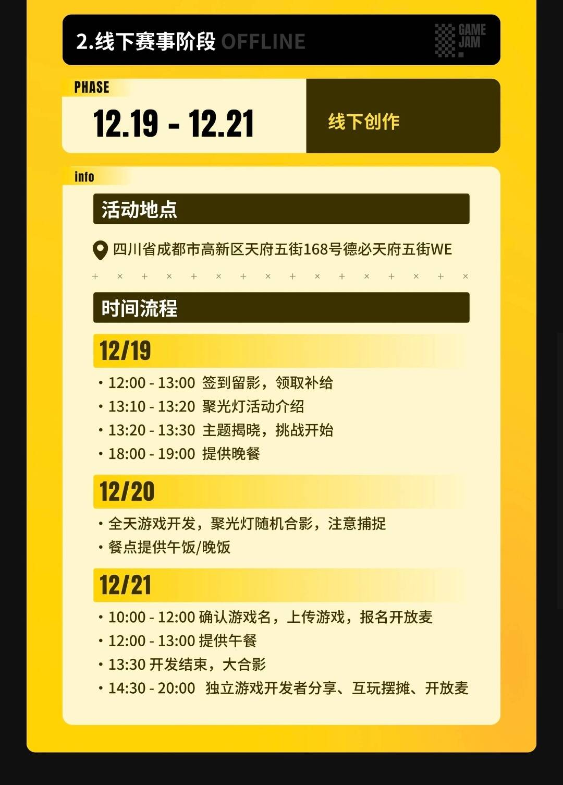

2025TapTap聚光灯48Hgamejam成都场复盘
放一下官方给的时间安排

不想听经历的话可以直接看本文的文件汇总，那里面的东西看完也差不多能知道这次做了什么
注：由于我不是上帝，我复盘只能以自己的视角看，所以我自己的部分会写的更详细一些，本文中描述各人的文字长度不能代表各人的工作量（手动叠甲）
我们的状况
成员组成：系统/数值策划+副程+地编+ui美术（大二程策美，后文称"我"），主程+地编（大二程序，组长，因为拿的牌子是"程序"，故后文称"程序"），玩法策划+原画（大四美术，线上美术，因大部分时间在干美术，故后文称"美术"），动画+管理（在职策划，因拿的牌子是"策划"，故后文称"策划"）
我和程序原先一直在合作做长期项目，本来因为要上课而不想打这场gamejam，但美术和策划在同一天找上了程序要组队，于是便因这样的机缘巧合组了队
脑暴
先说主题，“模拟器”
在这个阶段，那位在职策划很自然地展现了他的职业素养，她第一时间明确了脑暴需要产出的成果：（原文）
每个人可以去steam，tap或者微信小游戏排行榜，或者ai创作想法搜集一下，模拟器这个主题沾边的或者不沾边的都可。每个人准备2-3个及以上，写出①推荐原因比如趣味性可玩性②简要玩法，③可实现性。时间截止：下午四点
后面也是自然而然地大家都按着这个标准来，得到了以下结果：
最终我们拍板了美术灵感1，决定做出：玩家扮演一个狡诈的哥布林，利用陷阱来吓跑或杀死进犯洞穴的人类，保护洞穴深处核心，的横版动作游戏，原型名为"哥布林模拟器"，最终名为"我是哥布林"
这里提一嘴，在脑暴末尾有两个可选的灵感，一个是这个，还有一个是我的"gamejam模拟器"，但由于我和主程做卡牌做吐了想换换胃口（不过想换胃口为什么我还要写这个灵感？因为我的灵感大多都是兜底的，保证能做的），且策划说可能会和别人的想法撞车（不过吧要说撞车我感觉什么想法都能撞车，而且最终也没有团队做gamejam模拟器）
开发
一如上面的脑暴环节，这位在职策划又很快在脑暴结束后展现了他的职业素养，很快就给出了人员分工（不过嘛…额…某些人的工作量溢出来了，然后由于我做我的部分很快，我就把这些溢出来的工作量也揽了，所以分工后我在无限转职（那你问我，那我问你！我工作效率高我有错吗！））
先说说游戏吧，下面分别给出系统策划案、数值策划案（第二版，完全体）、数值策划案（第三版，因工期不足而砍过内容的版本）
还有玩法策划案是那位线上美术口述的，就是上面的"美术灵感1"
然后就直接写开发过程中出现的问题吧
程序框架
我和组长都是做程序的，其中组长主程，我辅助，我做的部分主要是耦合性不强的科技树系统和简单的敌人ai系统
但在此之前，主程没有做过横板动作游戏的长期项目，在打框架上出了些漏洞，我由于拿ue做过类似的游戏，所以我还是勉强能接住的
或许下次应该多考虑之前做过的游戏类型，当然，平时也得试着去做其他的游戏类型扩展模板库
策划的对接
这场比赛有三个名义上的策划，其中美术负责玩法策划，他会在会议里告诉我他想把这个游戏做成什么样，有哪些机制，然后我就按他的描述把游戏拆分成一个个系统（我拆解那么多游戏的经历终于派上用场了），写出来上文的"系统策划案"
在这个过程中两边传输的信息有些明显的失真，导致我还需要额外花些时间去问某些系统的具体细节（当然也有我的问题，在一次开会中没有把需要的信息完全问清楚）
美术的对接
这场比赛有两个名义上的美术，其中线上美术负责画人物/道具/场景原画，策划负责拿人物原画生成人物移动/攻击/死亡动画，我负责把原画和动画转成程序能直接用的资源（比如把动画转成精灵表），同时也负责设计ui和地编
在脑暴后的分工环节，我是不负责任何美术部分的，但由于动画直接给的序列帧的大小有些偏差，导致给出的资源程序不能直接用，所以我接手了转换工作，由于美术产出有点赶，为了能快些做出原型，所以我负责了设计ui和地编（当然，上面这些我还是有些经验的，不然我也不会接）
结果
不论如何，比上2025ggj还是好不少的（不和21天聚光灯比是因为时间不等没有比较价值），好歹我们也只是大二，还在慢慢积累经验
不过到最后大家都心照不宣地没有摆摊，这还是有些遗憾的
别人的情况
如某位大佬所说，打gamejam的动机可以有很多，有的是来挑战自己的，有的是来丰富简历的，有的是来拉投资的，有的是来找idea的，有的是来找队伍的，有的是来旅游的，有的是来找男女朋友的（这是能说的吗…）
好的游戏
以下列出几个我印象深刻的游戏和它的拆解
某忘记名字的国风九宫格游戏
参考：九王，小丑牌
游戏是永续的有肉鸽元素的回合制的，目标是在各个回合得到目标分数
游戏中玩家需要将手中的卡牌（表现形式是国风的墨点，但为了方便就写卡牌了）摆放到一个九宫格中，获得每个卡牌的分数，同时触发某些卡牌相互之间的联动效果，如A效果：使上下左右的B类型分数+10，这种依位置关系产生更多分数是游戏的核心玩法
游戏每回合结束时，会清空九宫格中的牌放回玩家手牌
游戏的肉鸽元素在于，每张牌在每个回合的效果不是固定的，如A牌有6个可能的效果：①分数5，使上下左右的B类型分数+10②分数10
还有一个地方的肉鸽是，每回合结束时，玩家可以从随机的三张牌中选择一张加入手牌
游戏有一个创新点，在此称为覆盖机制，游戏中存在一类特殊的牌，只能通过卡牌三选一获得，仅能使用一次，使用它的方式是将它覆盖在已经放在九宫格中的牌上，这样已经放在九宫格中的牌的当前效果就会变成该覆盖牌的效果，且永久保留这个覆盖产生的变更
覆盖的创新点在于，比如有一张好牌A，默认有五个好效果和一个坏效果，由于每个回合都会随机这张牌的某个效果，那么这张牌就有可能会随到这个坏效果导致这回合用不出这张牌，造成资源浪费，但假如我将一个好效果的特殊牌覆盖到这个效果上，就可以保证这张牌每回合都可以发挥作用
（吐槽一句，作为我们团队的数值策划，我实在不敢恭维这个游戏的数值策划，因为数值实在是有点难堪，但也体现出来这类游戏数值或许就是难策划）
某忘记名字的吃人模拟器
参考：苏丹的游戏（制作人是这样说的，但我没玩过这个游戏）
游戏是永续的有肉鸽元素的回合制的，目标是指挥五个人生存下去
游戏中主要分为如下ui：
执行栏，人物栏，手牌栏，时间指示器，火堆，分解台
（火堆和分解台就不讲了，这两个都是用于和其他牌产生联动的）
执行栏
游戏中的执行栏默认包含"治疗"和"探索"位，每个位都可以放置人物牌或手牌来达成相应的目标，比如玩家可以将人物牌派去探索，当人物牌有"受伤"状态时，可以将人物牌派去治疗
执行栏可以理解为"目标集"，后续玩家会通过拖拽手牌作用到其他栏位来增多这个目标，比如玩家可以将兔子拖到分解台，产生"分解兔子"的目标，随后玩家再拖拽某个人物牌执行这个目标，再比如玩家可以将冰块拖到火堆，产生"融化冰水"的目标，随后玩家再拖拽某个人物牌执行这个目标
人物栏
人物栏默认包含五个人物，这五个人物都有相应的"饱食度"和"需水量"，当这两个中任意一个值降为0时，人物死亡
特殊地，探索有一个机制，当某个人物进行探索时，他将不能执行额外的动作，人物会在最长一天内回来，饱食度和需水量降低，随机产生手牌资源（也可能不产生），同时也会产生随机的buff
人物身上可以有多种buff，比如"恐慌"，恐慌中的人物无法行动，当人物在探索时受伤并回来时，手牌会多出一张对应人物的恐慌牌，玩家需要把这张牌拖拽到分解台，随后执行栏会产生"分解恐慌"任务，玩家需要派其它人物执行这个任务来让其摆脱恐慌，或者派手牌"圣经"执行这个任务
时间指示器
游戏中的最小时间单位是"回合"，每4个回合算1天，玩家在拖动手牌和人物牌后需要点击时间指示器来度过该回合
吸引点
要说创新点吧，也只能说游戏的逻辑在模拟经营卡牌里算是清晰的了，所以这里就说吸引点吧
游戏中的分解台是可以分解人的，所以假如某个人物身上的debuff太多，属性值也太低，那么完全可以把这个人分解了当成食物，可以让其他人更好地活下去
《武器大师》（我更想叫它"打铁模拟器"）
游戏是永续的有肉鸽元素的实时的，目标是赚够足够的钱让时间流逝到下一天
游戏中玩家需要扮演一个铁匠经营一家铁匠铺，在游戏中会依实时时间流逝出现各种顾客，玩家需要通过购买材料，打造武器，售卖给对应的顾客来赚取资金，在一天中（大概6分钟还是几分钟，我不记得了）玩家需要赚够足够的资金，否则无法进入下一天
其中，仓库系统为类暗黑的形式，即每个材料和打成的武器部件都是不一定只占一格的
游戏中唯一的肉鸽元素就是顾客及顾客对武器提的要求（如：游戏初期有两种顾客，“平民"和"贵族”，平民对武器的要求会少一些，如"我要一个可以刺击的武器"，贵族对武器的要求会多一些，如"我要一个长柄的可挥砍也可刺击的武器"）
游戏中存在多种材料和多种可生产的部位，材料有如：石头，木头，铁锭，银锭，部位有如：长柄，短柄，短剑刃，长剑刃，刺剑刃，玩家通过使用不同材料打出不同的部位，再按一刃一柄的标准来组装武器，有一种自由组合的效果，也算是一种扩展性
游戏中的切题点在于，玩家在打铁的时候需要频繁点击鼠标左右键，来达到"打铁"的效果（有点沙威玛的味道），这与游戏中的其他系统的联动的地方在于，玩家使用不同材料打造不同部位所需要的时间是不同的，那么玩家就可以选择花很长时间打一把材料非常好，非常符合顾客要求的武器，也可以花很多零零散散的时间用垃圾材料供给零散顾客给的单子，也有模拟经营铁匠铺的味道
《逃离俄罗斯方块》
这可得说道说道了，这是我全场给的评价最高的一款游戏
游戏是永续的有肉鸽元素的实时的，目标是得到更多分数（说实在的，作为一个内核是类俄罗斯方块的游戏，我不认为这个游戏有明确的目标）
游戏结合了"俄罗斯方块"和"推箱子"两个经典游戏的核心机制，随时间实时流逝，场景上方会有几种组合的方块慢慢落下（这里就不讲那么详细了，毕竟就是俄罗斯方块）
同时，玩家可以操控场景中的一个小方块（这个方块是随着第一个方块落下的，当第一个方块落地时，玩家就可以操控这个小方块）在方块和空地间有子弹时间地移动
当存在玩家将要移动的方向所在的方块后方有空地时，该方块将被移动到该空地处（或许听着有些绕，但可以直接理解为推箱子，任何已落地的方块都是箱子，玩家可以在箱子中穿梭，只要玩家推的箱子方向有空地，箱子就可以被推动）
我问过这个作者有关这游戏的想法，也听了他的路演，他说切题点在于玩家通过模拟移动一大段路径来得到满足感（原话我不记得了，大致意思是玩家规划了一长串路径后让错误的方块得到消除可以让玩家很爽），说实在的，这似乎和"模拟器"搭不上边，只能勉强扯到"模拟"这样的元素
这个游戏我评价为"极简塔防"级游戏，机制简单但太有深度了，要是能扩展些东西不敢说比肩《极简塔防》，也得有一小批忠实受众
好的团队
额标题取的不是很好，但不需要在意。。。接下来内容不是很多，就不取小标题了
在开发过程中，我们对面那桌是五人组团（这次比赛组队上限是五人），他们有很明确的分工，一个策划，一个程序，一个美术，一个音乐，一个动画
哇，作为一个程策美三手抓的人，我想象不到到这种一个人专职一个部分的工作流有多爽，那个策划是多年在职的，我想应该是他做的项目管理
这也就是说，只要是团队，就不可避免地需要一个很有经验的人来做项目管理，否则各个成员后面一定会乱成一团
哦说句题外话，坐我对面的是主美，还是大三的（不要小瞧一个梦想过当嗨客的人的信息收集能力哇），woc，素颜真好看吧🤤坐我右上角对桌的是主音，画的妆有些浓，不一定好看，而且香水味有些重，打扰我写案子
还有一个团队，组长应该是记得很清楚的，他在回酒店之后特意跟我讨论了一会这个团队，他们做的是一个梦核的2D上帝视角移动游戏（我不知道怎么形容那种游戏类型），游戏中玩家需要移动一个小人收集地图中的某些收集物（可以简单理解为走迷宫），同时躲避这些收集物旁边环绕的怪物
它有吸引人的一点就是，地图不仅是有模板随机生成的，还是重复生成的，玩家视野外的所有场景都是会改变的，即玩家走过这一段地形后，往回走可能就是另一种地形，这是拿来切"梦核"这个主题的
除此之外我不敢恭维这款游戏，组长也说这个游戏做的有些烂
但他们团队里有一个很nb的路演，可以把游戏吹的天花乱坠，在他慢慢吹的过程中，这个游戏似乎就真的变得切题而且有深度了，就连平时二郎腿翘到天上的那俩评委也得低下头来在地上拾掇这个游戏的优点（有些夸张，但就是能阻止别人往坏的方面看，而且还引导别人往好的方面看，而且这个"好的方面"还不一定是真实存在的，大部分都是捏造的，没有体现在游戏里的，比如背景故事什么的）
不管怎么说，能来参加这个比赛的人都是经过筛选过的，至少有一技之长的，如前面提到的大佬所说，我们此行见识也结识了更多的人，也是一种收获
以上